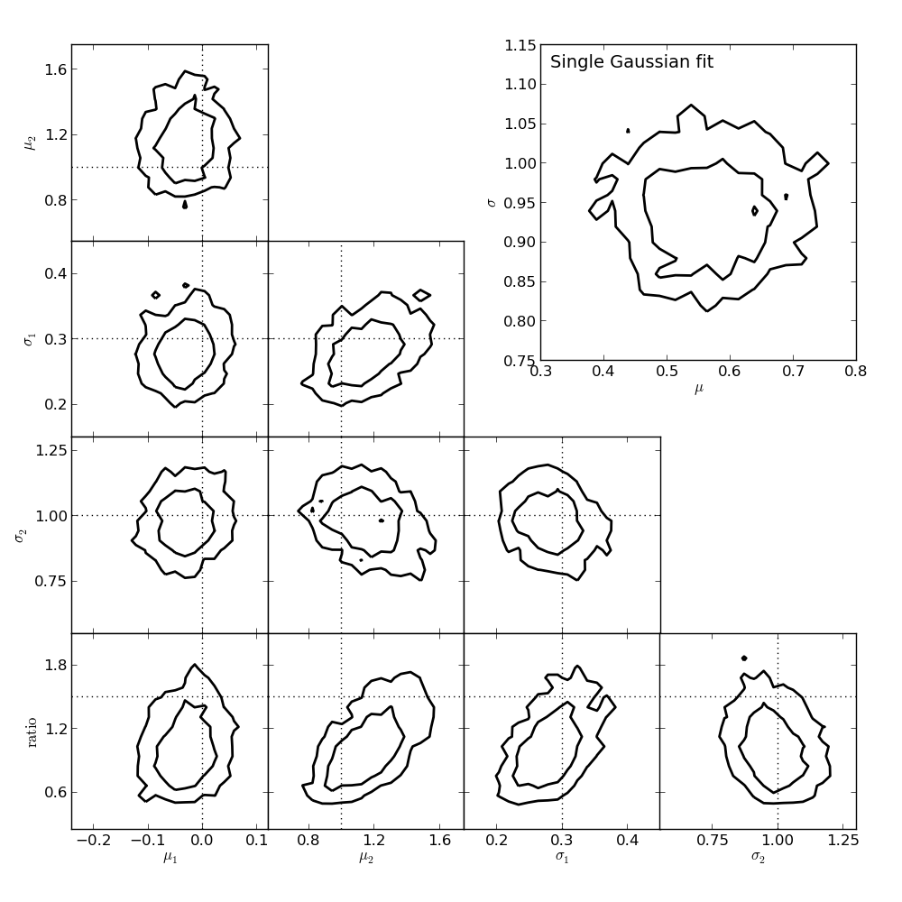

MCMC Model Comparison¶
Figure 5.24
The top-right panel shows the posterior pdf for mu and sigma for a single Gaussian fit to the data shown in figure 5.23. The remaining panels show the projections of the five-dimensional pdf for a Gaussian mixture model with two components. Contours are based on a 10,000 point MCMC chain.
{kind=link}
# Author: Jake VanderPlas (adapted to PyMC3 by Brigitta Sipocz)
# License: BSD
# The figure produced by this code is published in the textbook
# "Statistics, Data Mining, and Machine Learning in Astronomy" (2013)
# For more information, see http://astroML.github.com
# To report a bug or issue, use the following forum:
# https://groups.google.com/forum/#!forum/astroml-general
import numpy as np
from matplotlib import pyplot as plt
from scipy.special import gamma
from sklearn.neighbors import BallTree
import pymc3 as pm
import theano.tensor as tt
from astroML.density_estimation import GaussianMixture1D
from astroML.plotting import plot_mcmc
# ----------------------------------------------------------------------
# This function adjusts matplotlib settings for a uniform feel in the textbook.
# Note that with usetex=True, fonts are rendered with LaTeX. This may
# result in an error if LaTeX is not installed on your system. In that case,
# you can set usetex to False.
if "setup_text_plots" not in globals():
from astroML.plotting import setup_text_plots
setup_text_plots(fontsize=8, usetex=True)
def estimate_bayes_factor(trace, r=0.05, return_list=False):
"""Estimate the bayes factor using the local density of points"""
# Convert traces to a numpy array, ignore the intervals
trace_arr = np.array([trace[i] for i in trace.varnames if "_interval__" not in i])
trace_t = trace_arr.T
N_iter, D = trace_t.shape
# compute volume of a D-dimensional sphere of radius r
Vr = np.pi ** (0.5 * D) / gamma(0.5 * D + 1) * (r ** D)
# use neighbor count within r as a density estimator
bt = BallTree(trace_t)
count = bt.query_radius(trace_t, r=r, count_only=True)
BF = trace.model_logp + np.log(N_iter) + np.log(Vr) - np.log(count)
if return_list:
return BF
else:
p25, p50, p75 = np.percentile(BF, [25, 50, 75])
return p50, 0.7413 * (p75 - p25)
# ------------------------------------------------------------
# Generate the data
mu1_in = 0
sigma1_in = 0.3
mu2_in = 1
sigma2_in = 1
ratio_in = 1.5
N = 200
np.random.seed(10)
gm = GaussianMixture1D([mu1_in, mu2_in],
[sigma1_in, sigma2_in],
[ratio_in, 1])
x_sample = gm.sample(N)[0]
# ------------------------------------------------------------
# Set up pyMC3 model: single gaussian
# 2 parameters: (mu, sigma)
with pm.Model() as model1:
M1_mu = pm.Uniform('M1_mu', -5, 5)
M1_log_sigma = pm.Uniform('M1_log_sigma', -10, 10)
M1 = pm.Normal('M1', mu=M1_mu, sd=np.exp(M1_log_sigma), observed=x_sample)
trace1 = pm.sample(draws=2500, tune=100)
# ------------------------------------------------------------
# Set up pyMC3 model: mixture of two gaussians
# 5 parameters: (mu1, mu2, sigma1, sigma2, ratio)
with pm.Model() as model2:
M2_mu1 = pm.Uniform('M2_mu1', -5, 5)
M2_mu2 = pm.Uniform('M2_mu2', -5, 5)
M2_log_sigma1 = pm.Uniform('M2_log_sigma1', -10, 10)
M2_log_sigma2 = pm.Uniform('M2_log_sigma2', -10, 10)
ratio = pm.Uniform('ratio', 1E-3, 1E3)
w1 = ratio / (1 + ratio)
w2 = 1 - w1
y = pm.NormalMixture('doublegauss',
w=tt.stack([w1, w2]),
mu=tt.stack([M2_mu1, M2_mu2]),
sd=tt.stack([np.exp(M2_log_sigma1),
np.exp(M2_log_sigma2)]),
observed=x_sample)
trace2 = pm.sample(draws=2500, tune=100)
# ------------------------------------------------------------
# Compute Odds ratio with density estimation technique
BF1, dBF1 = estimate_bayes_factor(trace1, r=0.05)
BF2, dBF2 = estimate_bayes_factor(trace2, r=0.05)
# ------------------------------------------------------------
# Plot the results
fig = plt.figure(figsize=(5, 5))
labels = [r'$\mu_1$',
r'$\mu_2$',
r'$\sigma_1$',
r'$\sigma_2$',
r'${\rm ratio}$']
true_values = [mu1_in,
mu2_in,
sigma1_in,
sigma2_in,
ratio_in]
limits = [(-0.18, 0.18),
(0.5, 1.6),
(0.12, 0.45),
(0.76, 1.3),
(0.3, 2.5)]
# We assume mu1 < mu2, but the results may be switched
# due to the symmetry of the problem. If so, switch back
if np.median(trace2['M2_mu1']) < np.median(trace2['M2_mu2']):
trace2_for_plot = [np.exp(trace2[i]) if 'log_sigma' in i else trace2[i] for i in
['M2_mu1', 'M2_mu2', 'M2_log_sigma1', 'M2_log_sigma2', 'ratio']]
else:
trace2_for_plot = [np.exp(trace2[i]) if 'log_sigma' in i else trace2[i] for i in
['M2_mu2', 'M2_mu1', 'M2_log_sigma2', 'M2_log_sigma1', 'ratio']]
# Plot the simple 2-component model
ax, = plot_mcmc([trace1['M1_mu'], np.exp(trace1['M1_log_sigma'])],
fig=fig, bounds=[0.6, 0.6, 0.95, 0.95],
limits=[(0.3, 0.65), (0.75, 1.05)],
labels=[r'$\mu$', r'$\sigma$'], colors='k')
ax.text(0.05, 0.95, "Single Gaussian fit", va='top', ha='left',
transform=ax.transAxes)
# Plot the 5-component model
ax_list = plot_mcmc(trace2_for_plot, limits=limits, labels=labels,
true_values=true_values, fig=fig,
bounds=(0.12, 0.12, 0.95, 0.95),
colors='k')
for ax in ax_list:
for axis in [ax.xaxis, ax.yaxis]:
axis.set_major_locator(plt.MaxNLocator(4))
plt.show()